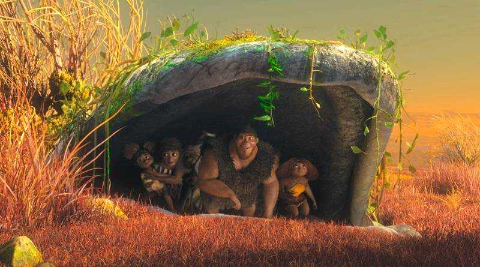

Pode-se dizer que, o filme “Os Croods”, tem de certa forma uma relação com o Mito da Caverna, porém seria uma versão infantilizada da obra. Sendo assim, possuindo alguns dos conceitos principais abordados dentro da teoria.
Que veremos isso de maneira mais profunda, logo abaixo.
O filme Croods conta a hostória de uma família de neandertais que procura sobreviver em uma era perigosa e seguindos regras para se manter segura, que incluem, permanecerem numa caverna à noite. Por esse motivo e o fato de Eep, uma das filhas da família, desejar explorar o exterior, um confronto é criado na família. Graças as semelhanças inconstestáveis entre o filme e o "Mito da Caverna" de Platão, muitas relações poder ser estabelecidas.

Brevemente, este filme nos conta a história de uma família da era das cavernas. Portanto, seu conhecimento não é muito avançado.
Além disso, pessoas que eles conheceram morreram de alguma doença ou por algum animal, e isso faz com que a família se torne insegura e “medrosa” com qualquer coisa “nova”.
Vale a pena dar destaque para suas rotinas, onde caçam durante o dia, e a noite se escondem na caverna, e sempre sobre o comando de Grug (pai da família), que tem uma personalidade muito marcante. Por conta da personalidade “marcante”, do Grug, a família sobrevive com regras, e a mais importante delas é “todos devem temer o novo”, em outras palavras, o lado de fora da caverna.
Entretanto, existe o x da equação, que é a filha mais velha, chamada Eep, uma adolescente com um espírito libertino, que deseja conhecer o que tem do lado de fora da caverna, também chamado como “mundo”.
⠀
O Mito da Caverna basicamente é uma narrativa, onde conta que indivíduos estavam presos olhando para uma parede em sua frente, nela era refletido a imagem de diversas coisas, como animais, objetos etc. E isso tudo, era devido a luz vindo de uma fogueira que iluminava o local, e desse jeito, projetando as tais figuras na parede.
⠀
O5 Mito da Caverna basicamente é uma narrativa, onde conta que indivíduos estavam presos olhando para uma parede em sua frente, nela era refletido a imagem de diversas coisas, como animais, objetos etc. E isso tudo, era devido a luz vindo de uma fogueira que iluminava o local, e desse jeito, projetando as tais figuras na parede.
⠀
O6 Mito da Caverna basicamente é uma narrativa, onde conta que indivíduos estavam presos olhando para uma parede em sua frente, nela era refletido a imagem de diversas coisas, como animais, objetos etc. E isso tudo, era devido a luz vindo de uma fogueira que iluminava o local, e desse jeito, projetando as tais figuras na parede.
⠀
O7 Mito da Caverna basicamente é uma narrativa, onde conta que indivíduos estavam presos olhando para uma parede em sua frente, nela era refletido a imagem de diversas coisas, como animais, objetos etc. E isso tudo, era devido a luz vindo de uma fogueira que iluminava o local, e desse jeito, projetando as tais figuras na parede.